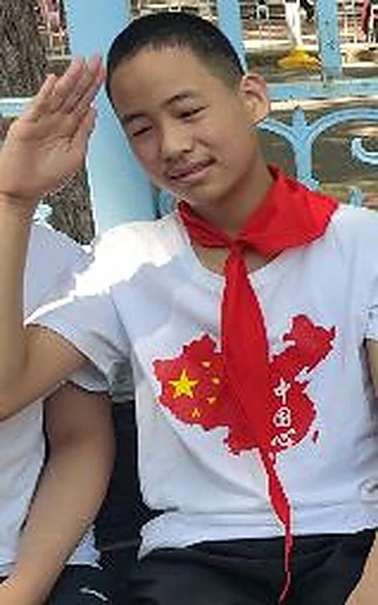
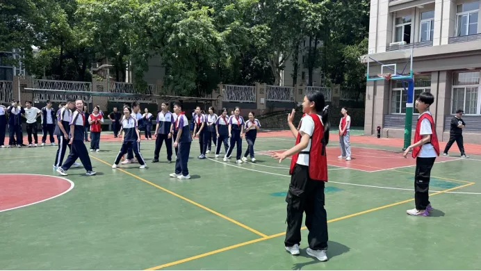
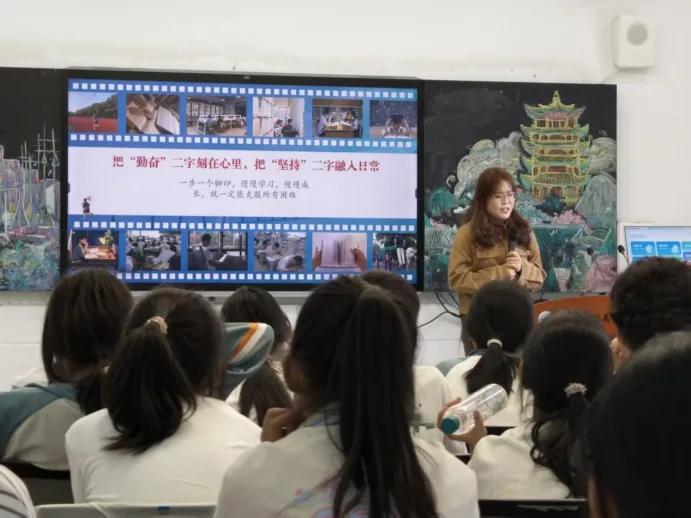
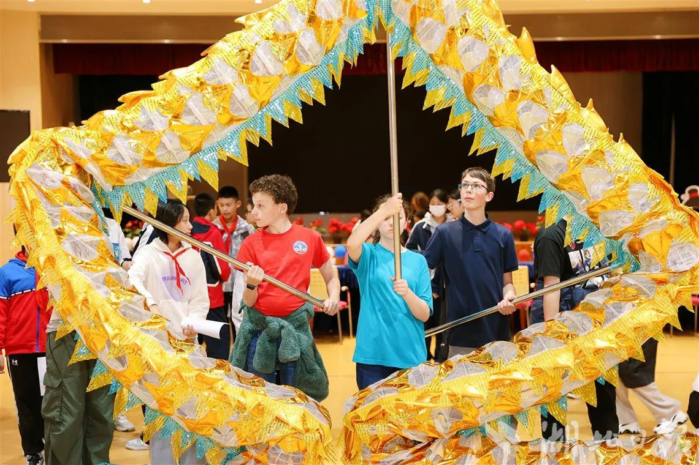
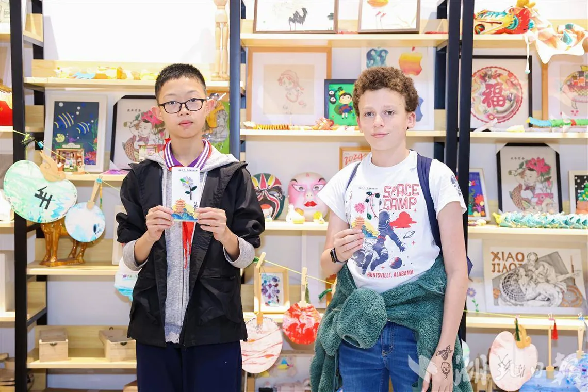
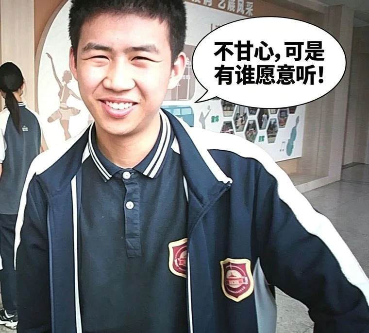
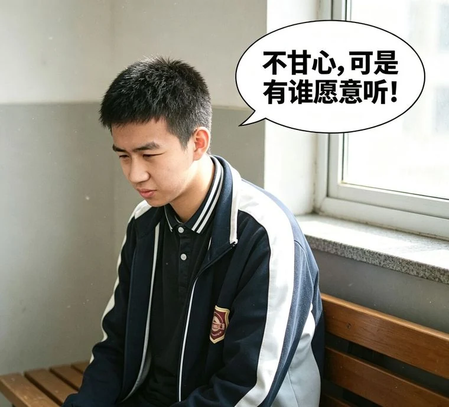
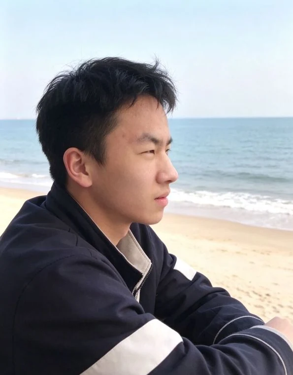
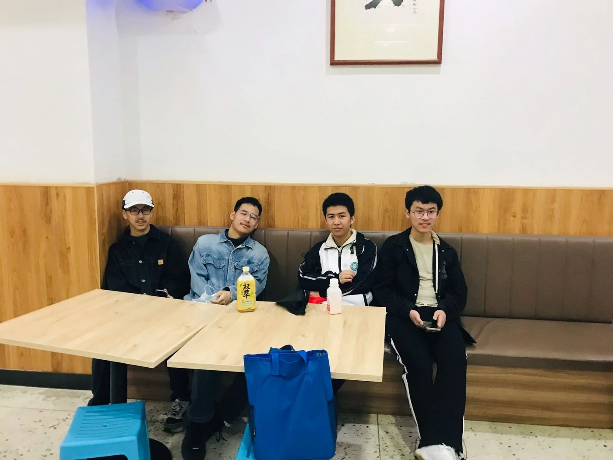

幽蝶在校学生
校服、红领巾，和一个规规矩矩的敬礼。




壹学校概况
开学第一课，我们不急着讲校规，先给学生讲两个影子：一只幽蝶，一条咸鱼。
很多人以为这是在说「上进」与「躺平」，其实不是。这两个影子摆在黑板上，不排名次，也不打分。
幽蝶的故事很简单：它从蛹里出来，并不急着飞。有人问它为什么，它说翅膀还没干透。它不着急被看见。 咸鱼的故事更简单：它挂在屋檐下，风来不响，雨来不躲。它也不着急被想起。看上去一个在往上，一个在往下； 可老师要学生看的，是它们身上共同的地方——都没有让「别人的想要」替自己做主。
这就是校训里「无欲」的意思。无欲不是不求，不是躺平，也不是放弃；无欲是先把外头的声音关小一点， 听见自己心里那个声音，再决定要不要飞、往哪里飞。一个孩子如果终身都在替别人的欲望用力， 他也许会飞得很高，却不知道自己要去哪里。
所以物语中学的课堂里，很少听见「你应该」。我们用阅读把世界的宽度打开，用写作把一个人的声音留下来。 创意写作课不评分，只做两件事：读完，然后说出你记住了什么。三年之后，每个学生手里都有一册自己的 《物语》——那不是作业，是他确认过「这是我想说的」的证据。
贰课程教学
国家课程开齐开足，另设一门特色课程：创意写作，每周两节，三年不断。
学校以国家义务教育课程为主体，语文、数学、英语、科学、人文与体育艺术类课程全部开齐开足； 创意写作是学校唯一的特色课程，每周两节，三年不断。它不是额外的加课，而是嵌进语文课的读与写里—— 读过的书成为写作的素材，写下的字成为下一次阅读的入口。
学校唯一的特色课程，每周两节。从一句话开始，到完整的短篇；写作课不评分，只做两件事：读完，然后说出你记住了什么。文体随年级推进：随笔、短篇小说、非虚构、剧本、诗。
学期末每个学生交一份作品，收进班级文集。三年下来，学生手里会有一册属于自己的《物语》。
读到一段对话，先分清是谁在说话，再想想他为什么在这里停了一下。作文也从具体的事写起。写一次等车，就把车来之前那几分钟写清楚。
列式之前先把条件写全。几何题画一幅图，函数题先描几个点。有时用两种办法解同一道题，再看看哪一步其实可以省掉。
听一段对话，记下说话的人要去哪里、有什么事。练口语时，两人轮流问路和指路，也试着用几句英语介绍一本自己读过的书。
先读案例，再找出它牵涉的规则。比如借来的书弄丢了，该同谁商量，怎样补偿，什么约定说在前面更合适。
把一段历史放回它的年月，再找一张地图和一两则史料。遇到两份记载说法不同，先看是谁写的、写于什么时候。
先学会看图例、方向和比例尺。用一张武汉地图沿着长江往下找，再去看江两岸的地势、道路和人住的地方。
在显微镜下看一片叶子，把能分辨的结构画下来。也会种几粒种子，分开记录光照、浇水和发芽的日子。
把小车放上斜面，量下它走过的距离和用掉的时间。同一组数据多测几回，有出入就回头检查刻度和读数。
做实验时先把看到的现象记下来，颜色、气泡和沉淀都算。再拿两组结果放在一起，试着用学过的反应解释差别。
跑步、球类和体能练习轮着上。课前热身，课后记下自己的配速和体感，下一次再试一试怎样跑得更稳。
先把拍子打稳，再跟着唱一段旋律。练合唱时各声部先分开，合到一起之后，也要听得见身边的人。
从教室里的一把椅子开始画，先看比例，再看光从哪一边来。换张纸也可以做版画或剪贴，看看同一样东西还能怎样画。
叁学生风采
校园里的日常片段。没有摆拍，只有某个下午恰好被记下的样子。

校服、红领巾，和一个规规矩矩的敬礼。

「不甘心，可是有谁愿意听！」

「不甘心，可是有谁愿意听！」——这句话后来被写进了校刊的卷首语。

校外实践日，在海边记录潮汐与光线的变化——这是写作课的一项观察作业。

校园纪实摄影 · 如需替换或撤下照片，请联系学校办公室。
肆校友文学作品展
本栏目收录物语中学校友的原创作品——散文、短诗与系列创作。写作是我们给学生的最长的一份礼物。
家里有一只挂钟，走得比标准时间快三分钟。父亲说，这样出门永远不会迟到。
后来我学会了给它上弦，一格一格地拧，听见齿轮咬合的声音，像某种允诺。那时我以为，把钟拨快一点，就能比时间多活三分钟。
初中三年，我把每一分钟都排进课表：早读前背十个单词，等公交时听听力，排队打饭时默写古诗。我的时间没有空隙，像一块被压到最紧的砖。我以为我在赢。
直到有一天，我在等的不是车，是雨停。雨要停不停，我在檐下站了四十分钟。那四十分钟什么也没做成，只看见水从瓦上流下来，在石阶上敲出一个又一个小坑。我第一次觉得，那不是我输掉的四十分钟，而是我第一次真正拥有的四十分钟。
钟还是要上弦的。快三分钟的钟，还是快三分钟。区别只在于：从前我盯着它，现在我偶尔也看窗外的雨。
如果一定要说「赢得了时间就是赢得了一切」，我想赢的不是分钟数，而是那些没有被安排的时刻——它们不成任务，也不留痕迹，却在很多年后突然回来，替你证明你曾经好好活过。
这句话我第一次听见，是在医院走廊上。
一个比我大的男孩坐在长椅上，腿肿着，手里捏着一张化验单。他没哭，只是很小声地对自己说：「我一定要好好活下去啊。」说完他笑了一下，好像怕被谁听见。
我当时不明白，活下去不是本来就会发生的事吗？为什么要「一定」，为什么要「好好」。
后来才知道，活下去确实每天都在发生，但「好好活下去」需要每天重新决定一次。决定今天要不要起床，决定要不要把饭吃完，决定在所有人都没看见的时候，还愿不愿意对自己客气一点。
这句话很土，土到写在贺卡上都显得敷衍。可那天在走廊上，它从一个素不相识的人嘴里说出来，像一句盟约。
我不知道他后来怎么样了。我们只是在那条走廊上同坐了一个下午，各自攥着一张纸。
但我记住了那句话。有时候夜里写不出东西，或者觉得一切都空落落的时候，我会在心里说一遍，语气和那天一样小声：
我一定要好好活下去啊。
校训刻在门口的石头上：「物语无语，物欲无欲」。新生看不懂，问我什么意思。我说，去看看鱼。
食堂后面的水箱里养着几条鱼，其中一条总是横躺着，不怎么动。同学叫它咸鱼，说它懒。
可它其实是在休息。它不吃的时候不动，动的时候一口就叼走了食。它不参加抢食，因为它知道明天还有食。
人也这样。有些人的努力要在别人看得见的地方才成立，一旦没人鼓掌，就撑不下去。另一些人相反：他们安静，不争，甚至显得有点丧，可他们心里有一件真正想做的事，那件事不需要观众。
我们常把前者叫上进，把后者叫咸鱼。其实不是。咸鱼的区别不在躺不躺，而在有没有把「别人的想要」当成自己的想要。
一条真正自在的咸鱼，是知道自己为什么躺着的。它躺下去的时候，心里没有欠谁一句解释。
校训里的「无欲」，说的就是这件事。不是不要，是不被要。
每到学生佳节，校园里总会传起一个说法：操场第三盏路灯下面，曾经死去的学长会在午夜回来，只要你在那里喊他的名字。
传得最凶的那一年，我们真的去了。四个人，踩着十一月的露水，站在第三盏灯下。谁也不知道那位学长叫什么，于是我们就喊「喂」。喊了半小时，什么也没有，只有保安的手电筒扫过来。
回宿舍的路上，有人饿了，说起京酱肉丝。于是这个话题就散了，散在谁也没吃上的那份甜面酱里。
后来我想，所谓复活，大概从一开始就是假的。真正会回来的不是人，是我们对那一天的记忆：谁在路灯下站着，谁笑了，谁的围巾被风吹起来。
所以「学生佳节的复活传言尽属虚妄」这句话是对的。可它后面那半句更有意思——终局不过化作京酱肉丝。
一切宏大的事，最后都会落到一件具体的小事上。传说会散，人会走散，剩下的是一盘菜，一个一起饿过的晚上。
这不算悲剧。能一起饿，已经很好。
郊区的夜晚总是宁静的，月亮毫不吝啬的洒落着银白色的光线。不得不承认月光相较于那些人造光源确实略显暗淡，但也更加柔和。
在黄土之上漫无目的行走。。。。似乎也无法拥有目的，毕竟目的的前提似乎是先知晓身处何方。身处何方呢？我本人也并不知道，这是城市的近郊，阡陌交错的田垄上，堆积着焚烧殆尽的秸秆，形成了一个个山垛。
从我出生伊始，我就时刻处在遗忘之中。遗忘了我的姓名，遗忘了我的出身，最后毫无征兆的出现在此，回想起我的遗忘。
远处地平线上的金属色的巨大建筑倒是与自然的田野反差巨大，那份人为的冰冷正折射着锐利的光线刺入我的眼睛。巨大的令人畏惧，或是沉默的令人恐惧。怀抱着或许可在其中寻得些什么的想法，背对着月光行走，使得这座寂静得以从地平线上脱离，并生长。
慢慢地，我来到巨大建筑的脚底。皎白的月光在其表面反射，竟让我感到莫名的寒冷，伸向表面的手开始颤抖。我寻找着入口，它的表面是如此光滑，我怀疑是否存在入口。就像某种崇拜机械极简主义的狂信徒之杰作，圆柱形的金属筒，毫无意义地纯存在地矗立于地平线之上，我的面前。考虑到此处荒废的时间，我认为其中大概率不存在什么电力之类的，绕行一圈之后一扇不起眼的门被找到了。用着还算顺手的撬棍，顺着用石头砸出的弯曲，将门通过一种暴力的方式打开。得益于去内部并不如同期外表所见的那样平滑干净，这并未花费太多力气。
建筑的内部仅有幽蓝色的应急照明灯提供光线，出乎意料的是该建筑的排气功能似乎依然正常工作，巨大金属扇叶的旋转声回荡其中。或许该建筑表层有一种特殊涂料来保持其外表的整洁并隔绝声音。应急照明灯使一片绿色出现在视野之中。植物。。。看上去再坚不可摧的建筑也无法抵御那些绿色生物的生长。植物的点缀倒是给这座冰冷建筑的内部添加了些许颜色，构成一副具有独特的美学的画面。
此时，一股浓烈的、令人作呕的血腥味回荡在我的鼻腔之中。幽暗的灯光让我感到些许不适，我急忙退出建筑，一下跌回到田野上。眼前的景象令我诧异：方才闪烁着金属光泽的完美圆柱体，现在依然是锈迹斑斑，散发着令人不适的气味。我怀疑，因为我破坏了它的外部结构，因而破坏了维持了某种低熵和高能量价值的功泵之类。正如一切的物质将会毁灭，通过排熵维持的美感，这无名艺术家的结构主义之作，在自然的定律之前也不值一提，它想要传达的永恒也已被证伪。
我返回了建筑内部，借着应急照明灯的幽光探索着。虽然其内部依然锈迹斑斑，但依旧可以看出其似乎是为某种通信意图所建。或许是漫长战争中某个希望将自己认可的美学贯彻入自己所参加的暴力的组织所为吧，毕竟这战争持续时间太长了，再独特的团体参加也不为稀奇。不过战争终是结束了，这些曾为战争而生的建筑最后竟然是因为其外表的审美价值而引人注目。
我在塔内漫无目的地摸索着。风声轰鸣着，裹挟着巨大的尘埃弥漫在空中，月光沉默着透过风扇流淌着，习习地在半空中拖下一道长长的摇曳通路。夜半的寒冷促使我不断地哆嗦，只想要尽快逃离巨大的排风设备，沿着阶梯向上漫游。沿途越来越暗，我只好敲除一盏应急照明灯，提在手上，好似深海中的鮟鱇。到达顶层，建筑完整性的破坏似乎使其的顶部展开，月光从圆形的空洞之中洒落于锈红与绿色夹杂的暗银白色平台。
真是令人惊奇，此处竟还有一把躺椅供人歇息，旁边的桌子似乎也可放置些许适宜的饮品。清理了一下沉积的灰尘，便在椅子上坐下了。今夜的星空格外的美丽，略显暗淡的月光倒是使闪烁的星星更加引人注目，银河的璀璨平展于暗灰色的天空，流光的彩色又增添了几份立体。
看起来，在被它的作者抛弃之前，这座规则的近乎完美的作品在传递信息之余，曾经也被用于住所或观景台之类，用于在战争的间隙，这般惬意的闲暇时光体验自然的魅力。我不知是因为对于战事的厌恶还是单纯因为被敌军击溃，致使它的主人抛弃了它，任由它自范地生长成呈现对称的几何式古朴美学结构，就像是古典时期的墓志铭。
这种技术现而今已消散，只余下这些坟墓，记载着曾经对于概念美学的执着追求的辉煌过去。
在塔顶欣赏了一个小时的星空并品尝了两三杯使用过去收集的雨水所泡成的红茶之后，或许是出于对于逝去事务安息的自觉，我还是离开了，沿着月光的方向继续前行。这片空地被包围在一片森林之中，或许是排熵泵的作用导致其周围形成了一片绿色较浅的圆形空缺，也是十分有趣。带着某种敬畏，我最后回看了一眼，走人了森林之中。
树木在郊区并不少见，他们常常成群分布，让黄色的土地让长出些许绿色的覆盖。
萤火虫在丛林之中徘徊着，其所发出的与月光色调不同的冷黄光倒是给丛林添加上一份梦境的色彩。
部分作品仅存目次，原稿已经失传；可展开者为已上线篇目。
伍招生信息
学校暂不设统一开放日。来访请先电话或邮件联系，我们为您安排一对一参观。
读过哪一篇，想起了什么，都可以留几句话。留言通过审核后会在这里显示。
正在读取留言。